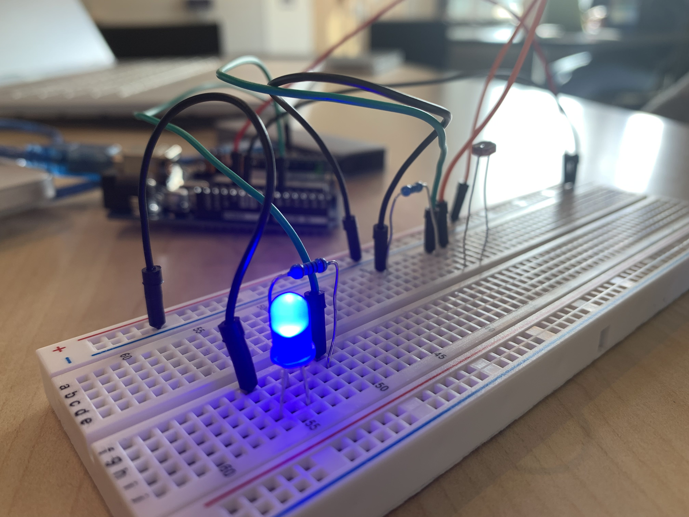

Assignment 3: InputOutput

Below is the schematic, circuit and firmware! For this assignment I wanted to flip the logic and turn have the LED turn on when it's dark outside and when it gets bright, the LED will turn off. Kind of like automatic headlights or outdoor houselights! When building the circuit, I used a resistor of 220 ohms because it limits the current for both the blue and red LEDs to below 30mA. With the calculations anything over 160 Ohms should work fine for LED. I used the same resistor value for the photoresistor. This time I learned how to post a snippet of the code which was very exciting. In the gif, it is demonstrated what happens to the LED when a phone light shines on the photoresistor. If the value is below 30, the LED will shine.
// Input Output Assignment
// When it is dark outside the lEDs will turn on to light your way!
// Initializing analog in and out pins and values
int sensorPin = A0;
int ledPin = 6;
int sensorValue = 0;
int newVal = 0;
void setup() {
pinMode(ledPin, OUTPUT);
Serial.begin(9600); // initialize serial communications at 9600 bps:
}
void loop() {
Serial.print("Here is your sensor value = "); // print the results to the Serial Monitor:
Serial.println(sensorValue);
sensorValue = analogRead(sensorPin); // read the analog in value:
newVal = map(sensorValue, 90, 350, 0, 255); // map it to the range, limits range values between 90 and 350
newVal = constrain(newVal, 0, 255); // constains new value to be within range, takes care of outliers
if (newVal < 30) { // if the value is under 30, LED will shine
analogWrite(ledPin, 255); // else it will turn off
} else {
analogWrite(ledPin, 0);
}
}